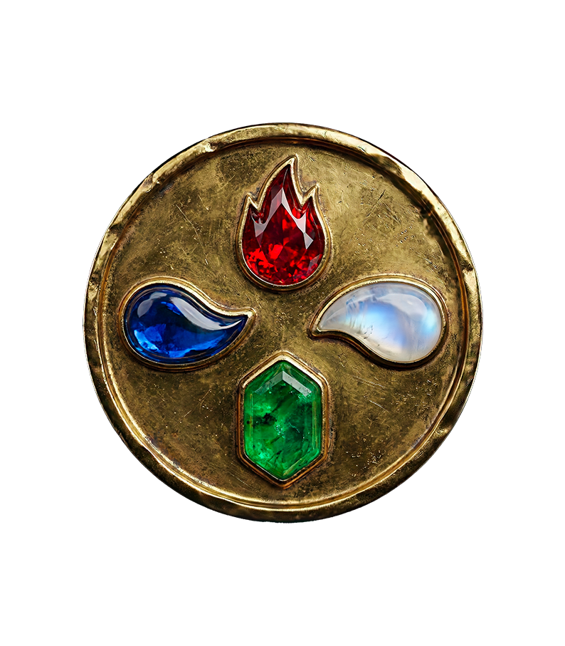

L'astrologie authentique repose sur quatre piliers fondamentaux : les 4 éléments. Ils sont l'essence même de votre tempérament. Comprendre votre élément, c'est comprendre votre moteur intérieur, la façon dont vous aimez et dont vous percevez le monde.
Bien avant que votre signe solaire ne détermine votre "caractère" au sens où les magazines l'entendent, c'est votre élément qui trace les grandes lignes de votre nature profonde. Les Babyloniens et les astrologues grecs classaient déjà le ciel selon ces quatre familles : le Feu qui agit, la Terre qui construit, l'Air qui pense et l'Eau qui ressent. Trois signes se partagent chaque élément, séparés par leur mode d'expression (cardinal, fixe ou mutable), mais reliés par une même énergie de fond. Savoir à quel élément vous appartenez ne remplace pas un thème complet, mais c'est souvent la clé qui manque pour comprendre pourquoi vous vous entendez instinctivement avec certaines personnes, et pourquoi d'autres vous épuisent sans raison apparente.
Les Signes de Feu
(Bélier, Lion, Sagittaire)
Le Feu est l'énergie pure, l'étincelle de vie. Les natifs de Feu sont des initiateurs, des passionnés et des visionnaires. Ils avancent à l'instinct, brûlant d'une énergie contagieuse. En amour, ils cherchent la passion et l'aventure. Leur défi ? Apprendre à ne pas se brûler les ailes par impulsivité.
Reconnaître un Feu au quotidien, c'est facile : c'est celui qui prend la décision avant que le groupe ait fini de peser le pour et le contre. Le Bélier fonce en premier, le Lion rayonne au centre, le Sagittaire part sans regarder la carte. Ce sont des signes cardinaux ou mutables tournés vers l'action immédiate, rarement dans l'attente. Leur enthousiasme est contagieux : un Feu peut faire démarrer un projet entier rien qu'en y croyant à voix haute.
Leur ombre se cache exactement là où brille leur force : dans l'urgence. Un Feu mal canalisé s'épuise vite, s'ennuie encore plus vite, et confond parfois la vitesse avec la direction. Le travail spirituel du Feu n'est pas d'éteindre sa flamme, mais d'apprendre à la nourrir sans tout consumer autour d'elle — ni les autres, ni lui-même.
Mots-clés : Action, Courage, Passion, Vitalité.
Les Signes de Terre
(Taureau, Vierge, Capricorne)
La Terre est la matière, la construction, le concret. Ces signes sont les bâtisseurs du zodiaque. Pragmatiques, sensuels et persévérants, ils ont besoin de voir pour croire. Ils apportent la sécurité et la structure. En amour, ils sont fidèles et sensuels, cherchant une relation durable.
On repère un signe de Terre à sa constance : le Taureau qui ne change jamais de café le matin, la Vierge qui a un système pour tout ranger, le Capricorne qui planifie sa carrière à dix ans. Ce ne sont pas des signes qui parlent de leurs sentiments en premier, ils les montrent — par un service rendu, un dîner préparé, une présence qui ne bouge pas quand tout le reste vacille. Leur amour se prouve dans la durée, rarement dans les grandes déclarations.
Leur ombre, c'est la rigidité. À trop vouloir du solide, un signe de Terre peut se figer dans une routine qui ne le nourrit plus, par peur du changement plus que par réel choix. Le chemin de la Terre, c'est apprendre que la sécurité ne vient pas seulement du contrôle, mais aussi de la capacité à lâcher prise sans que tout s'effondre.
Mots-clés : Stabilité, Réalisme, Patience, Sensualité.
Les Signes d'Air
(Gémeaux, Balance, Verseau)
L'Air est le souffle de l'esprit, la communication, l'échange. Les signes d'Air vivent dans le monde des idées. Sociables, curieux et intellectuels, ils ont besoin de liberté et de stimulation mentale. Ils relient les gens entre eux. En amour, ils cherchent avant tout une connexion intellectuelle et une complicité amicale.
Un signe d'Air se reconnaît à sa vitesse de pensée : le Gémeaux qui change de sujet trois fois dans la même phrase, la Balance qui pèse chaque argument avant de trancher, le Verseau qui a déjà une idée sur ce que sera le monde dans dix ans. Ils ont besoin de mots pour exister, de débats pour se sentir vivants, et de circuler librement entre les gens et les idées sans qu'on leur demande de choisir un camp.
Leur ombre, c'est la distance. À force de tout analyser, un signe d'Air peut se couper de ce qu'il ressent vraiment, préférant la théorie de l'émotion à l'émotion elle-même. Le travail de l'Air, c'est d'apprendre à atterrir de temps en temps : sentir avant de comprendre, rester avant de commenter.
Mots-clés : Intelligence, Liberté, Communication, Idéalisme.
Les Signes d'Eau
(Cancer, Scorpion, Poissons)
L'Eau est l'émotion, l'intuition, le rêve. Ces signes ressentent le monde plus qu'ils ne le pensent. Mystiques, empathiques et profonds, ils sont connectés aux marées invisibles de l'âme. En amour, ils cherchent la fusion totale et l'absolu. Leur grande sensibilité est leur plus grand don, mais aussi leur fragilité.
On reconnaît un signe d'Eau à ce qu'il capte avant qu'on ne le lui dise : le Cancer qui sent qu'un proche va mal avant même un appel, le Scorpion qui perçoit ce qu'on cherche à cacher, les Poissons qui absorbent l'ambiance d'une pièce entière en y entrant. Ce sont des signes qui pensent par images et par intuitions plus que par logique, et qui ont besoin d'un espace où leur sensibilité n'est pas vue comme une faiblesse.
Leur ombre, c'est la noyade. À force de tout ressentir, un signe d'Eau peut se perdre dans les émotions des autres au point d'oublier les siennes, ou se réfugier dans l'évitement pour ne plus rien sentir du tout. Leur chemin, c'est apprendre à poser des limites sans se fermer : rester une éponge, mais choisir ce qu'on absorbe.
Mots-clés : Intuition, Émotion, Rêve, Mystère.
"Les éléments sont les briques invisibles de notre âme."

LE SANCTUAIRE
Harmoniser son Intérieur & son Esprit
Feu • Énergie
La Bougie Rituelle
"Réveillez votre vitalité intérieure..."
Découvrir →Feu • Purifier
Sauge Blanche
"Le grand nettoyage énergétique..."
Découvrir →Terre • Ancrage
Jardin Zen
"Retrouver le calme et la stabilité..."
Découvrir →Terre • Nature
Aromathérapie
"Les parfums de la forêt chez vous..."
Découvrir →Air • Esprit
Bol Tibétain
"Purifier les pensées par le son..."
Découvrir →Air • Harmonie
Carillons Koshi
"La mélodie du vent pour la maison..."
Découvrir →Eau • Émotion
Fontaine Zen
"Apaiser l'hypersensibilité..."
Découvrir →Eau • Rituel
Bain de Déesse
"Sels et fleurs pour une détente sacrée..."
Découvrir →